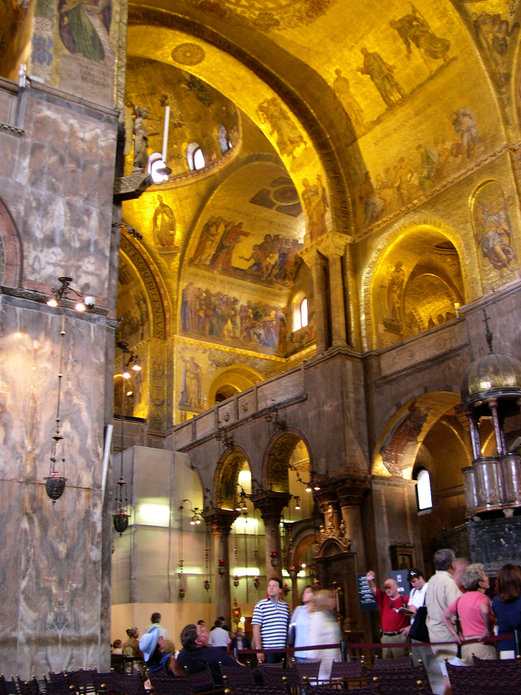
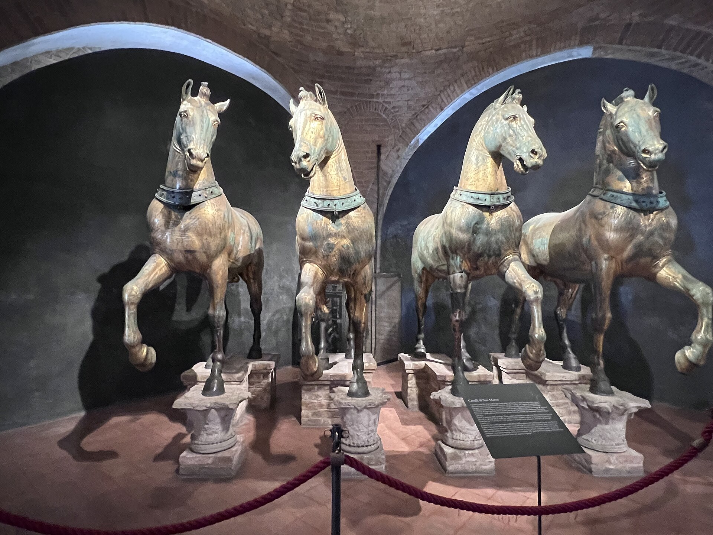
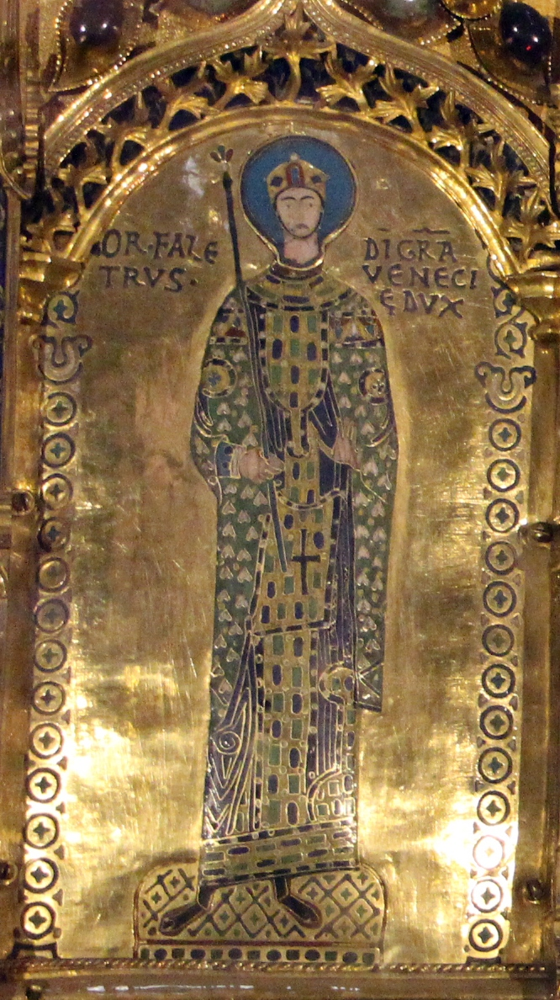
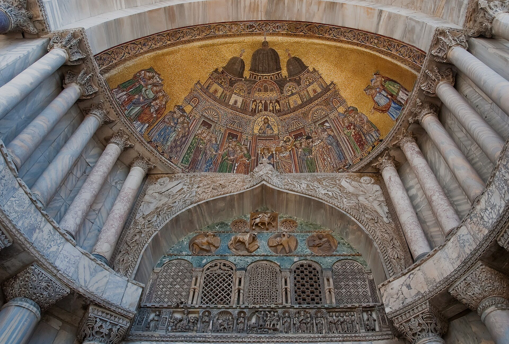

威尼斯的宗教与政治心脏，拜占庭风格的黄金教堂：828 年为安放“偷运”来的圣马可遗体而建，1204 年第四次十字军东征后又用君士坦丁堡的战利品装点立面。8000 平方米的金色马赛克覆盖穹顶与拱顶，人称 Chiesa d'Oro（黄金教堂）。
看点路线
Il Percorso
- 1上午 11 点前后阳光射入中庭，金马赛克最亮（弥撒时段部分封闭）
- 2中央穹顶《耶稣升天》与《圣马可遗体入殿》马赛克
- 3主祭坛后的金色祭坛 Pala d'Oro
- 4上层博物馆：看原版铜马与俯瞰广场的露台
重点看点
La Basilica · 6 件黄金看点

金色马赛克穹顶
五个穹顶 + 拱顶共 8000 平方米马赛克，用了约一吨黄金箔。抬头是拜占庭式的时间观：基督升天、圣马可神迹、末日与永恒--威尼斯人用整个天花板讲了一个“我们受上天庇护”的故事。

圣马可铜马
1204 年第四次十字军从君士坦丁堡赛马场拆来的鎏金青铜四马。拿破仑 1797 年又把它们运去巴黎（1815 年物归原主）。现在立面上的是复制品，原版在楼上博物馆--它们凝视广场的方向，就是威尼斯千年来的野心方向：东方。

金色祭坛 Pala d'Oro
主祭坛背后的金色屏风：1.4 x 3.4 米，嵌 187 块珐琅、2000 余颗宝石，讲着圣马可与基督生平。它是拜占庭宫廷金工的绝唱--第四次十字军洗劫君士坦丁堡后，这种工艺就失传了。

立面马赛克与“最后审判之门
五个拱门的马赛克分别讲圣马可遗体运抵威尼斯、末日审判等主题。最左（北）门 13 世纪的《创世》马赛克最古--在圣马可广场排队时抬头先看，进殿前已完成预习。
圣马可墓与主祭坛
祭坛下方就是圣马可墓（1094 年“失而复现”后供奉至今）。抬头是 15 世纪的耶稣受难像与彩色大理石柱--这些柱子同样来自 1204 年的君士坦丁堡：威尼斯人把“抢劫”做成了艺术采购。
上层博物馆与露台
楼梯上去先看四马原版（鎏金斑驳的痕迹）、波斯与拜占庭挂毯，然后走上立面露台--俯瞰整个圣马可广场与总督宫。这个角度是“威尼斯帝国的驾驶舱视角”：广场即后宫，湾口即海权。
历史故事
Le Storie
壹偷一位圣人回来
828 年，两位威尼斯商人布诺与鲁斯蒂科从亚历山大港的商站写信回来：圣马可（福音书作者、亚历山大城的主保圣人）的遗体正面临搬迁圣地的风险--不如我们把它“救”到威尼斯？
按他们的记载，遗体被裹进猪皮（猪皮让穆斯林海关捏着鼻子放行），混在腌肉桶里装船。途中风暴骤起，传说圣马可本人显灵平息海浪--“平静了风暴”（Pax tibi Marce）从此成为威尼斯的国家 logo。
此前威尼斯的主保圣人是希腊的圣狄奥多。圣马可的到来完成了一次品牌升级：一具遗体，把威尼斯的出身从“逃难”改写成“天命”。
贰1204：改变教堂的一场抢劫
第四次十字军原计划攻打埃及，被威尼斯舰队（总包商是总督恩里科·丹多洛）改道去了君士坦丁堡--基督教世界的第二首都。1204 年城破，三天洗劫。
威尼斯的“份额”里包括：四匹铜马、大量斑岩与蛇纹石柱、金色祭坛的珐琅嵌板、圣髑与宝石。它们被运回圣马可教堂，立面成了帝国的资产负债表。
今天站在露台上看铜马原版：它们的鎏金斑驳处，一边是 1204 年的火焰，一边是 1797 年拿破仑的巴黎之旅--欧洲史的全部戏剧性，压缩在四匹马的背上。
叁遗体的“失而复现”
976 年，一场针对总督的叛乱火烧教堂与半个街区，圣马可的遗体从此下落不明。此后近 120 年，威尼斯人在没有“圣髑”的教堂里做着“圣髑之城”的生意。
1094 年，重建教堂落成之际，一根柱子神秘开裂，露出石室内的银棺--圣马可“显灵归来”。总督下令当天全城庆典，这个事件被做成北门马赛克。
现代史家倾向于认为：遗体可能从未离开，只是火灾后藏进了柱基（或者是一场精心安排的公关）。中世纪的“找到圣髑”与“圣髑显灵”是同一件事--威尼斯需要的不是证据，是叙事。
肆金色教堂的“一吨黄金”
五个穹顶与拱顶共 8000 平方米马赛克，用了约一吨黄金箔--11-13 世纪的威尼斯工匠用拜占庭技法，把“教义”铺满了整个天花板。
每次火灾后的重修都加入当时的叙事：中殿的《圣马可遗体入殿》、西门廊的《创世》、北门的《圣马可神迹》--一座教堂的马赛克就是一部连环画史书。
上午 11 点前后阳光从中门射入，金马赛克最亮（弥撒时段部分封闭，注意时间）。
伍铜马的身份之谜
立面上的四匹鎏金青铜马（现露台博物馆的原版）被认为是公元前 2-3 世纪的希腊 originals 的罗马复制品--出土自君士坦丁堡赛马场，具体作者与年代至今成谜。
它们的铸造用了“失蜡法分体+铜焊”，眼睛与鬃毛的细节说明原型来自希腊化时代的杰作--中世纪与文艺复兴的骑马像（包括委罗基奥的科莱奥尼）都认它们当祖宗。
1797 年拿破仑把它们运去巴黎做凯旋门装饰，1815 年归还--威尼斯人为此付了运费，账单至今在档案馆。
陆圣马可狮子与“国家标志”
带翼狮子是圣马可的象征--如今它出现在威尼斯的市徽、旗帜与每一间咖啡馆的招牌上。
柱广场上的青铜翼狮（原立于皮拉雷奥的圣马可柱顶，今为复制品+原件修复）的身世同样成谜：风格近亚述-希腊化，可能是丝路贸易带回的战利品改造成的“狮子”。
2018? 年起它被移入总督宫博物馆修复，广场柱顶暂放复制品--一只“可能是亚洲血统的狮子”当了威尼斯一千年的门面，这很威尼斯。
柒广场的“水舞”与涨潮
圣马可广场是全城海拔最低点之一：涨潮（acqua alta）时它是第一个被淹的“威尼斯浴缸”--水从排水口倒灌，广场变成一面镜子。
本地人对“水漫广场”的态度是仪式感的：穿雨靴拍照、在栈板上喝咖啡，等潮退。1966 年大潮淹到 1.94 米后，全城建立了预警与潮汐屏障系统 MOSE。
晴天早晨的广场是“全欧洲最美的客厅”，涨潮早晨的广场是“全欧洲最超现实的镜子”--两种都值得看一次。
捌钟楼与“被烧毁又重生”的塔
广场旁 98.6 米的钟楼 1902 年突然整体坍塌（无人伤亡，倒是压死了总督图书馆门口的一只猫）--原因是最底层数百年的开采与水土流失。
威尼斯人投票决定“原样重建”（com'era, dov'era），1912 年新塔落成。塔顶的五钟各有名字与用途：审判钟、工人钟、午钟、马课时钟与行政钟。
登塔电梯票旺季排队一小时起--清晨 9 点开门首批最从容。塔顶看广场与泻湖的角度，是“威尼斯明信片”的总机位。
玖“袖珍的君士坦丁堡”
圣马可教堂的平面仿自君士坦丁堡的圣使徒教堂（已毁）--希腊十字五穹顶的结构，在拉定欧洲是“进口货”。
威尼斯人的自我定位因此清晰：我们是西方里的东方、拉定里的希腊。教堂立面的掠夺品清单（柱子、浮雕、雕像）是一份“与拜占庭的亲戚关系证明”。
看立面最上层的中拱：那里的《圣马可遗体入殿》马赛克与古代战利品柱并置--教堂一边讲故事，一边出示收据。
拾“威尼斯的婚礼”与海的联姻
每年升天节（复活节后 40 天），总督乘金船（Bucintoro）出海，把金戒指投入亚得里亚海：“我们与你联姻，哦大海。”--威尼斯的“海婚”仪式始于约 1000 年。
这个仪式把一座商业城市的海权浪漫化：我们不是占领海，我们与海结婚。金船在 1798 年被拿破仑军队烧毁（为取金饰）--现代的仪式用普通船只重演。
圣马可湾口正是当年投戒指的水域。在教堂露台上看那片海：威尼斯与它的一千年婚约，至今有效。
参观贴士
Consigli Pratici
- 弥撒时段（工作日早 7-9 点前后、周日上午）教堂对礼拜者开放、对游客关闭--排行程避开
- 教堂免费票也要过安检与着装检查（不露肩膝）
- 露台博物馆的铜马原版 + 广场俯瞰是 €7 里最值的部分，别省
- 地下墓穴（圣克莱门特小堂）含在门票，是 9 世纪教堂的原始地面
- 旺季 10:00-15:00 队伍最长，官网订 15 分钟时段票可免排
- 圣马可广场的鸽子与“喂食收费”骗局仍存在，别接任何递来的饲料
顺路同游
Da Non Perdere